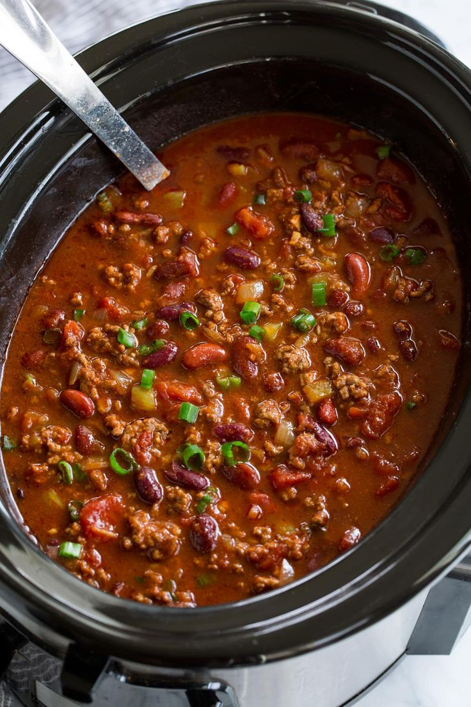

Crockpot Chili

Description
Chili is a hearty meal, and comfort food, that is filling and nutritious.
Ingredients
- ground beef
- kidney beans
- peppers
- onions
- tomatoes
- spices
- chips
- shredded cheese
- pasta or rice
Steps
- brown ground beef on stove
- drain beef and add to crockpot
- add beans, veggies, and spices to crockpot
- cook on low for 6 hours, or high for 4 hours
- cook pasta or rice 20 minutes before crockpot is ready
- scoop rice/pasta into bowl
- scoop chili on top
- finish with grated cheese, chips, and diced onion
- Enjoy!